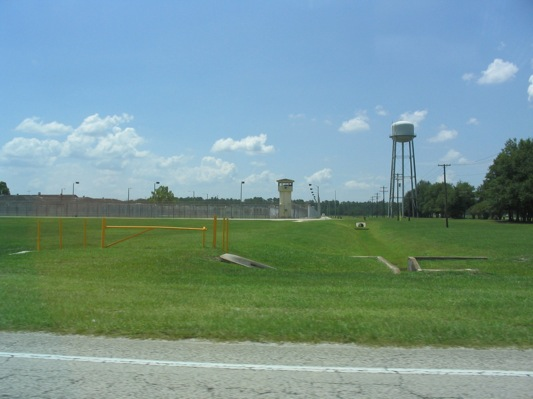

फ्लोरिडाले विलियम रिभ्सलाई मृत्युदण्ड दियो, यो यस वर्षको १८औं मृत्युदण्ड हो
७७ वर्षीय विलियम रिभ्सलाई सन् १९८६ मा डेपुटी रिचर्ड राक्जकोव्स्कीको हत्याको आरोपमा फ्लोरिडा राज्य कारागारमा घातक सुई लगाएपछि पूर्वी समयअनुसार साँझ ६:१२ बजे मृत घोषित गरियो। यो यस वर्ष फ्लोरिडाको १८औं मृत्युदण्ड हो।

मुख्य बुँदाहरू
- फ्लोरिडाले मंगलबार साँझ रेफर्डस्थित फ्लोरिडा राज्य कारागारमा विलियम रिभ्सलाई घातक सुई लगाएर मृत्युदण्ड दियो। फ्लोरिडा सुधार विभागका प्रवक्ता जोर्डन किर्कल्यान्डले कारागारमा आयोजित पत्रकार…
- फ्लोरिडाले मंगलबार, अक्टोबर २० मा साँझ ६ बजे स्टार्क नजिकैको फ्लोरिडा राज्य कारागारमा विलियम रिभ्सलाई घातक सुई लगाएर मृत्युदण्ड दिन लागेको छ। यो गभर्नर रन डेसान्टिसको कार्यकालमा यस वर्ष दिएइने…
- रिभ्स, ७७, सन् १९८६ मा इन्डियन रिभर काउन्टीका डेपुटी रिचर्ड राक्जकोव्स्कीको हत्या गरेकोमा मृत्युदण्डको सजाय पाएका हुन्। उनी यस वर्ष फ्लोरिडामा मृत्युदण्ड पाउने ७० वर्षभन्दा माथिका आठौं कैदी…
अद्यावधिक 22:38 UTC
फ्लोरिडाले मंगलबार साँझ रेफर्डस्थित फ्लोरिडा राज्य कारागारमा विलियम रिभ्सलाई घातक सुई लगाएर मृत्युदण्ड दियो। फ्लोरिडा सुधार विभागका प्रवक्ता जोर्डन किर्कल्यान्डले कारागारमा आयोजित पत्रकार सम्मेलनमा उनलाई पूर्वी समयअनुसार साँझ ६:१२ बजे मृत घोषित गरिएको बताए, TCPalm ले जनाएको छ। अन्तिम शब्द सोध्दा रिभ्सले भने, "छैन। म सँग छैन।" उनको अन्तिम खाना क्र्याकर र जुस थियो। किर्कल्यान्डका अनुसार रिभ्स बिहान ५ बजे ब्यूँझिए, सहयोगी बने, उनीसँग चार जना भेट्न आए, उनकी बहिनी, भतिजा, दाइ वा भाइ र एक साथी, र उनले एक आध्यात्मिक सल्लाहकारसँग भेट गरे। इन्डियन रिभर काउन्टीका शेरिफ एरिक फ्लावर्स पत्रकार सम्मेलनमा उपस्थित थिए। यो यस वर्ष फ्लोरिडाको १८औं मृत्युदण्ड थियो, र अमेरिकी सर्वोच्च अदालतले मंगलबार नै रिभ्सको स्थगन अनुरोध अस्वीकार गरेको थियो।
फ्लोरिडाले मंगलबार, अक्टोबर २० मा साँझ ६ बजे स्टार्क नजिकैको फ्लोरिडा राज्य कारागारमा विलियम रिभ्सलाई घातक सुई लगाएर मृत्युदण्ड दिन लागेको छ। यो गभर्नर रन डेसान्टिसको कार्यकालमा यस वर्ष दिएइने १८औं मृत्युदण्ड हुनेछ। डेसान्टिसले आफ्नो अन्तिम कार्यकालमा हालका कुनै पनि फ्लोरिडा गभर्नरभन्दा बढी मृत्युदण्डको प्रयोग गरेका छन्।
रिभ्स, ७७, सन् १९८६ मा इन्डियन रिभर काउन्टीका डेपुटी रिचर्ड राक्जकोव्स्कीको हत्या गरेकोमा मृत्युदण्डको सजाय पाएका हुन्। उनी यस वर्ष फ्लोरिडामा मृत्युदण्ड पाउने ७० वर्षभन्दा माथिका आठौं कैदी हुनेछन्। यस्ता घटनाहरूको शृङ्खलाले देशको मृत्युदण्ड पर्खिरहेका कैदीहरूको उमेरतर्फ ध्यान खिचेको छ।
सन् १९८६ को हत्या
सेप्टेम्बर २३, १९८६ मा २९ वर्षीय राक्जकोव्स्की भेरो बिच नजिकैको एउटा पसलमा आएको ९११ कलमा पुगेका थिए। त्यो कल रिभ्सले नै पसल बाहिरको सार्वजनिक फोनबाट गरेका थिए। दुई जना कुरा गरिरहेका बेला रिभ्सको सर्टबाट बन्दुक खस्यो। दुई जनाबीच हतियारका लागि संघर्ष भयो, रिभ्सले बन्दुक फेरि नियन्त्रणमा लिए, र डेपुटी भाग्न खोज्दा उनले चार पटक गोली हाने। राक्जकोव्स्कीको घाउका कारण मृत्यु भयो। रिभ्स केही दिनपछि पक्राउ परे।
सेप्टेम्बर १९८७ मा जुरीले रिभ्सलाई पहिलो श्रेणीको हत्यामा दोषी ठहर गर्यो र उनलाई मृत्युदण्डको सजाय सुनाइयो। सन् १९९१ मा फ्लोरिडा सर्वोच्च अदालतले त्यो फैसला उल्टायो, किनभने उनको मुद्दाका एक अभियोजकले पहिले उनको बचाउ वकिलको रूपमा काम गरेका थिए। सन् १९९२ मा दोस्रो जुरीले उनलाई फेरि दोषी ठहर गर्यो, र त्यसयता उनी मृत्युदण्डको प्रतीक्षामा छन्।
रेकर्ड गति
फ्लोरिडाले गत वर्ष १९ वटा मृत्युदण्ड दिएर राज्य रेकर्ड बनाएको थियो। मंगलबार रिभ्सलाई मृत्युदण्ड दिइयो र नोभेम्बर ५ मा तय भएको अर्को मृत्युदण्ड पनि भयो भने, जहाँ ६४ वर्षीय जेसी ग्वार्डाडोलाई सन् २००४ मा लुटपाटका क्रममा भएको हत्याका लागि मृत्युदण्ड दिइनेछ, फ्लोरिडाले त्यो रेकर्ड बराबरी गर्नेछ। यस वर्ष अमेरिकामा रेकर्ड भएका ३१ मृत्युदण्डमध्ये आधाभन्दा बढी फ्लोरिडाले नै दिएको छ। सन् २०२५ भरिमा देशभर कुल ४७ जनालाई मृत्युदण्ड दिइएको थियो।
जनवरीमा पद छाड्ने डेसान्टिसले आफ्नो लक्ष्य मृत्युदण्डको सजाय कार्यान्वयनका लागि दशकौंदेखि पर्खिरहेका पीडित परिवारलाई न्याय दिनु रहेको बताएका छन्। फ्लोरिडाका सबै मृत्युदण्डमा तीन औषधिको घातक सुई प्रयोग गरिन्छ: बेहोस पार्ने औषधि, पक्षाघात गराउने औषधि र मुटु रोक्ने औषधि, सुधार विभागका अनुसार।
दयाको अपिल
रिभ्स सेनाका भेटेरान हुन् जसले भियतनाममा पैदल सेनाको मेसिन गनरको रूपमा सेवा गरे, उनी नोभेम्बर १९६९ मा २० वर्षको उमेरमा त्यहाँ पुगेका थिए। उनका वकिलहरूले अन्तिम अपिलहरूमा तर्क गरे कि उनको मृत्युदण्ड सिफारिस गर्ने जुरीहरूलाई भेटेरान मामिला विभागले उनलाई सेवाका कारण भएको पोस्ट ट्राउमाटिक स्ट्रेस डिसअर्डरबाट १०० प्रतिशत अपाङ्ग घोषणा गरेको कुरा कहिल्यै बताइएन। फ्लोरिडा सर्वोच्च अदालतले गत हप्ता उनका अन्तिम अपिलहरू अस्वीकार गर्यो, जसमा राज्यको घातक सुई विधिविरुद्धको चुनौती पनि थियो। अमेरिकी सर्वोच्च अदालतले मंगलबार दिउँसोको सुरुमै उनको स्थगन र मुद्दा पुनरावलोकनका अनुरोधहरू अस्वीकार गर्यो।
सोमबार, १०० भन्दा बढी सैन्य भेटेरानहरूले डेसान्टिसलाई पत्र पठाएर मृत्युदण्ड रोक्न आग्रह गरे। उनीहरूले लेखेका छन् कि देशले देख्न नसकिने घाउ बोकेर घर फर्कने सैनिकहरूलाई त्याग्नु हुँदैन भन्ने कर्तव्य छ। डेसान्टिसले कुनै हस्तक्षेपको घोषणा गरेका छैनन्।
स्रोतहरू
एसोसिएटेड प्रेसले अक्टोबर २०, २०२६ मा मियामीबाट रिपोर्ट गरेको हो। USA TODAY ले अक्टोबर १९, २०२६ मा यस घटनाको विस्तृत विवरण प्रकाशित गरेको थियो। Floridians for Alternatives to the Death Penalty ले अक्टोबर १९, २०२६ मा भेटेरानहरूको पत्र प्रकाशित गरेको थियो। TCPalm ले अक्टोबर २०, २०२६ मा अमेरिकी सर्वोच्च अदालतले स्थगन अस्वीकार गरेको रिपोर्ट गर्यो।
समयरेखा
- Sep 23, 1986रिभ्सले आफैंले सार्वजनिक फोनबाट गरेको ९११ कलमा डेपुटी पुगेपछि भेरो बिच नजिकैको पसल बाहिर डेपुटी रिचर्ड राक्जकोव्स्कीलाई चार पटक गोली हान्छन्।
- Sep 1987जुरीले रिभ्सलाई पहिलो श्रेणीको हत्यामा दोषी ठहर गर्छ र उनलाई मृत्युदण्डको सजाय सुनाइन्छ। सन् १९९१ मा फ्लोरिडा सर्वोच्च अदालतले फैसला उल्टाउँछ, र सन् १९९२ मा दोस्रो जुरीले उनलाई फेरि दोषी ठहर गर्छ।
- Sep 18, 2026गभर्नर रन डेसान्टिसले रिभ्सको मृत्युदण्डको वारेन्टमा हस्ताक्षर गर्छन्, यो यस वर्षको उनको १८औं वारेन्ट हो, र मृत्युदण्ड अक्टोबर २० का लागि तय गरिन्छ।
- Oct 19, 2026१०० भन्दा बढी सैन्य भेटेरानहरूले डेसान्टिसलाई पत्र लेखेर मृत्युदण्ड रोक्न आग्रह गर्छन्। उनीहरूका अनुसार रिभ्सको जुरीले उनको लडाइँसँग सम्बन्धित PTSD को पूर्ण प्रमाण कहिल्यै सुनेन।
- Oct 20, 2026७७ वर्षीय रिभ्सलाई फ्लोरिडा राज्य कारागारमा साँझ ६ बजे घातक सुई लगाएर मृत्युदण्ड दिन तय गरिएको छ, जसले उनलाई सन् २०२६ मा फ्लोरिडाको १८औं मृत्युदण्ड बनाउनेछ।
- Oct 20, 2026अमेरिकी सर्वोच्च अदालतले मंगलबार दिउँसोको सुरुमै रिभ्सको स्थगन र मुद्दा पुनरावलोकनका अनुरोधहरू अस्वीकार गर्छ, साँझ ६ बजेको मृत्युदण्डको बाटो खुल्छ। संघीय जिल्ला न्यायाधीशले अक्टोबर १९ मा स्थगन अस्वीकार गरेका थिए।
- Oct 20, 2026रिभ्सलाई फ्लोरिडा राज्य कारागारमा घातक सुई लगाएपछि पूर्वी समयअनुसार साँझ ६:१२ बजे मृत घोषित गरियो, यो सन् २०२६ मा फ्लोरिडाको १८औं मृत्युदण्ड हो। अन्तिम शब्द सोध्दा उनी भन्छन्, "छैन। म सँग छैन।"
स्रोतहरू
- Associated Press: Florida is set to carry out 18th execution this year and moving closer to tying record
- USA TODAY: Vietnam vet faces execution for cop killing. Was it PTSD or murder?
- Floridians for Alternatives to the Death Penalty: Veterans urge DeSantis to stop execution of William Reaves
- FOX 13 Tampa Bay: DeSantis signs 18th death warrant of 2026 for William Reaves
- TCPalm: Live updates, Florida to execute William Reaves after 38 years on death row
- TCPalm: Appeals denied, William Reaves to be 18th Florida execution this year